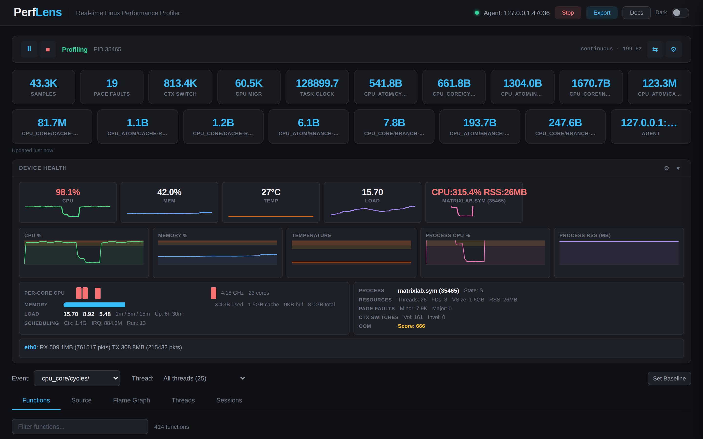

Open source · MIT
Real-time Linux profiling,


Real-time Linux profiling,
straight in your browser.
Drop a tiny agent on any Linux box, point it at a PID, and watch flame
graphs, function tables, perf stat metrics, and line-level
annotated source update live — no frameworks, no Docker,
no pip dependencies.
